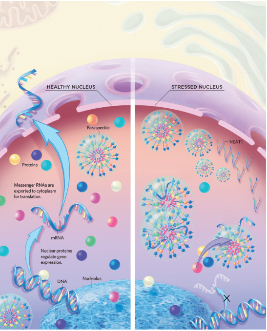
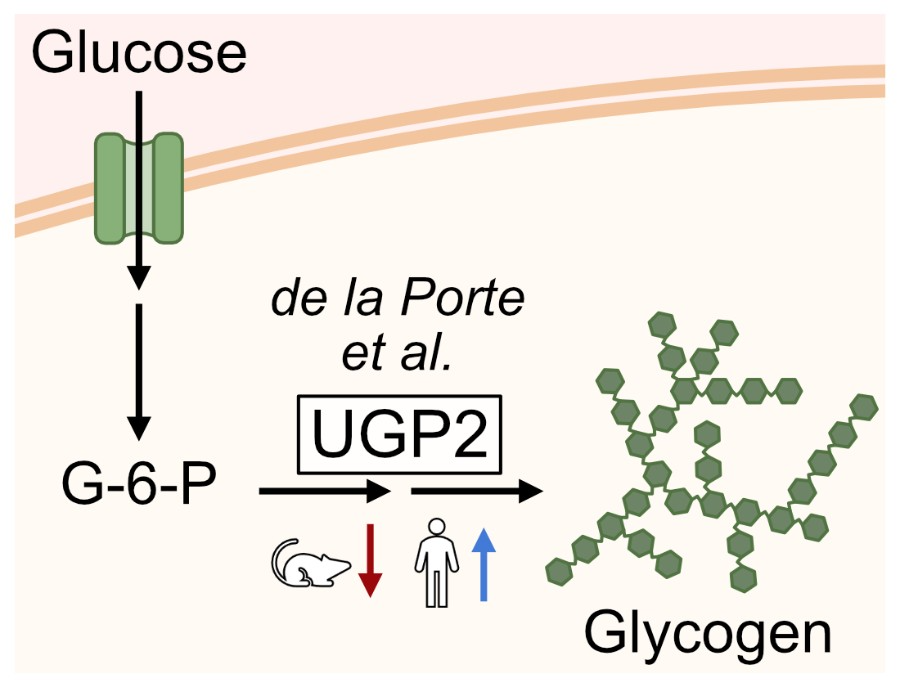
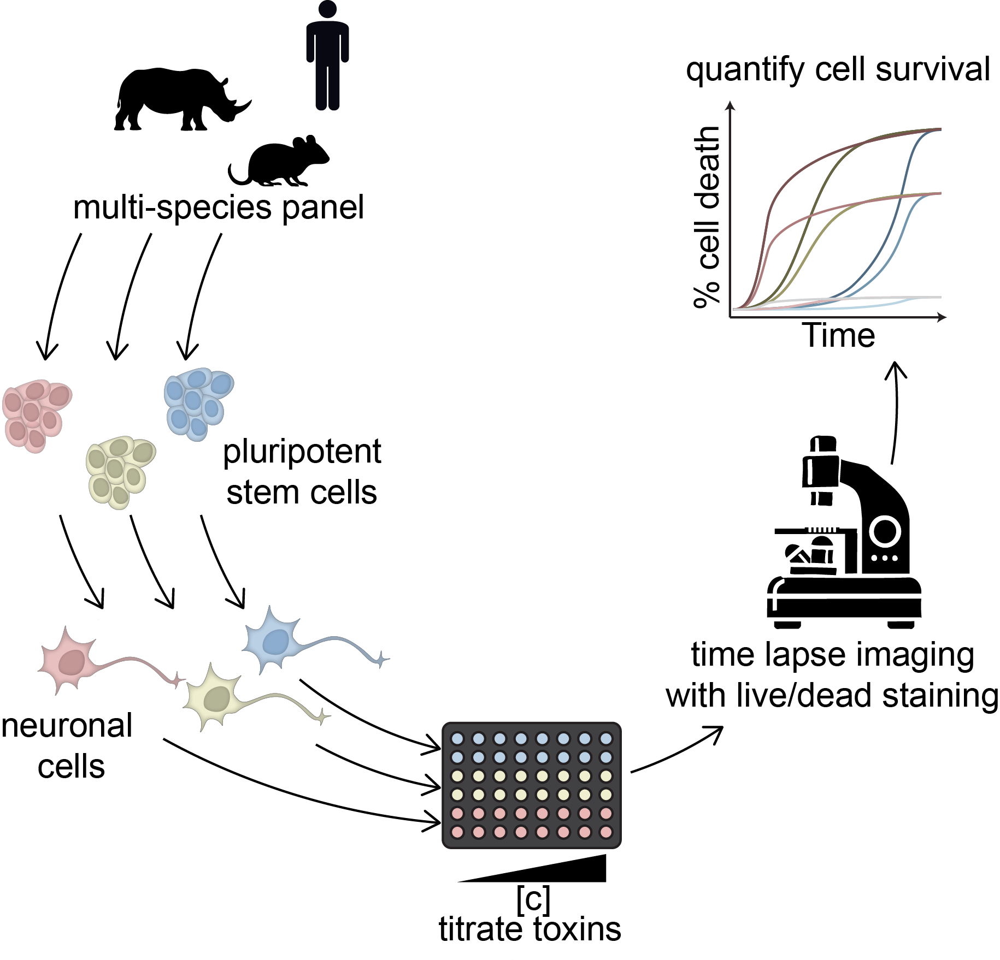
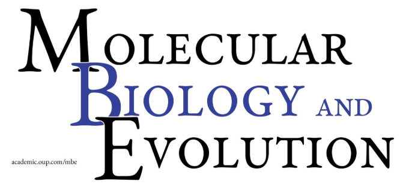
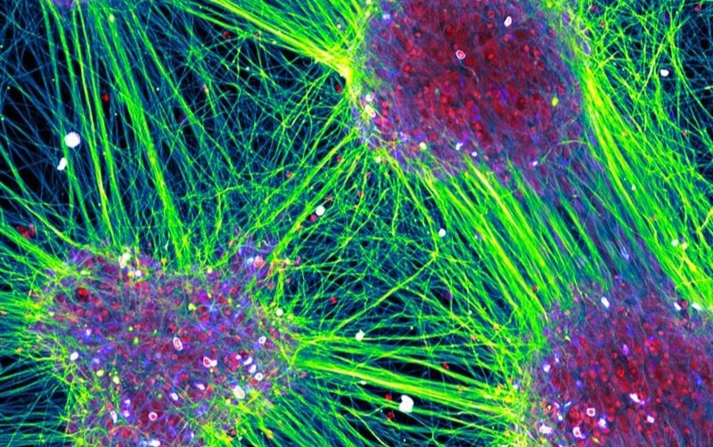

About the Grant
The Templeton Foundation has financed this project under Grant ID 62572 as part of their genetics research support directive. “The mission of the John Templeton Foundation is to support interdisciplinary research and catalyze conversations that inspire awe and wonder. We are working to create a world where people are curious about the wonders of the universe, free to pursue lives of meaning and purpose, and motivated by great and selfless love.”
The fact that neurons and other types of cells in the human body are rarely replaced raises the question of the genetic mechanisms that enable cells to function properly for decades and possibly 100 years or more. The popular “free-radical aging” and “rate of living” theories, and the Hayflick phenomenon, fail to adequately explain such extreme cellular longevity. Nevertheless, these ideas affect human behavior e.g. intake of antioxidant supplements and experimental rejuvenation therapy. Our project will investigate a new direction that connects the efficiency of stress response to cellular and animal lifespan, and analyze a candidate genetic mechanism. We will create models of cells that are rarely replaced, e.g. neurons, and cells with limited lifespan, e.g. fibroblasts, from exceptionally long living, and short living mammals. We will expose cells to repeated stress stimuli while monitoring their viability by high throughput microscopy. Moreover, we will analyze the mammalian long noncoding RNA gene NEAT1 orchestrating the assembly of specialized stress-induced complexes, named paraspeckles. We identified key components of the paraspeckle-RNA-metabolism-protein quality axis (e.g. Mol. Cell 2019, BMC Biology 2020), and our preliminary analysis indicates high homology among long living mammals. Based on putative connections to lifespan, we will analyze the phylogeny of NEAT1, and overexpress paraspeckles to quantify stress protection effect in each species. To validate mechanisms, we will transfer NEAT1 from mammals with highly efficient stress protection to less efficient cells.
The project will deliver answers on the ability of cells to withstand prolonged stress in relation to animal lifespan, paraspeckles function, and their evolution. If successful, a new theory and model of cellular lifespan will be established, paving ways to investigate and prevent age-related frailty. The multispecies stem cell approach will open new avenues for evolution and genetics.
Current Projects

Project 1: NEAT1
An architectural long non-coding RNA, NEAT1, presents a paradox: three experimentally confirmed mammalian orthologs do not exhibit sequence similarity but retain full functionality—the paraspeckles that they form were detected in all three species, and the main resident proteins were identified. So, how is it possible to preserve functionality and structure without maintaining sequence homology? In this paper, we addres this question by applying a comparative phylogenetic approach.
The uniqueness of our method lies in the joint study of two syntenically connected lncRNAs—NEAT1 and MALAT1—which also share a very unique maturation process involving the tRNA-processing machinery. As a result, we were able to identify NEAT1 orthologs across a wide range of mammals, even when primary sequence similarity was absent.
We found that certain structural features, like tRNA-like structures, triple helices, and specific protein-binding sites, are well-preserved over time. In NEAT1, we also identified stable regions that help it interact with important proteins like TDP-43 and NONO. Our results suggest that the shorter form of NEAT1 has a distinct role, as it is more conserved in both sequence and length. We also found evidence that the process controlling which NEAT1 form is produced may be similar across species, likely mediated by TDP-43. Additionally, we showed that repetitive DNA elements have played a key role in NEAT1’s evolution by affecting its length, creating stable structures, and introducing new protein-binding sites.

Project 2: Paraspeckles
Mammalian species not only exhibit distinct embryonic development timelines but also display remarkable variations in lifespan. We seek to determine whether these differences in lifespan manifest at the cellular level. Cellular stress is considered a key trigger in cellular aging, and we hypothesize that species with longer lifespans may exhibit greater cellular stress resistance.
Paraspeckles are membraneless organelles found exclusively in mammals, which are primarily composed of the long non-coding RNA NEAT1 and various RNA-binding proteins (RNPs). Studies have shown that paraspeckles are closely associated with cellular stress responses. We propose that the stress resistance capacity of paraspeckles may vary across species and that this variation could influence species lifespan.
To compare the stress resistance capacity of paraspeckles across different species, we plan to use CRISPR to knock out the Neat1 gene in mouse embryonic stem cells. Additionally, we will employ recombineering technology to construct a donor plasmid carrying the human NEAT1 gene and use the Flp-in system to replace the endogenous Neat1 gene with its human counterpart. Subsequently, we will induce differentiation of these cells into neural cells and apply various stress stimuli to mimic the cellular aging process. Finally, by analyzing paraspeckle number, cell survival rate, and metabolic activity, I aim to compare the stress resistance capacity of paraspeckles across different species.

Project 3: Metabolism and species specific development rates
Embryos from different mammalian species develop at characteristic timescales. These timescales are recapitulated during the differentiation of pluripotent stem cells in vitro. Specific genes and molecular pathways that modulate cell differentiation speed between mammalian species remain to be determined. Here we use single-cell multi-omic analysis of neural differentiation of mouse, cynomolgus and human pluripotent cells to identify regulators for differentiation speed.
We demonstrate that species-specific transcriptome dynamics are mirrored at the chromatin level, but that the speed of neural differentiation is insensitive to manipulations of cell growth and cycling. Exploiting the single-cell resolution of our data, we identify glycogen storage levels regulated by UDP-glucose pyrophosphorylase 2 (UGP2) as a species-dependent trait of pluripotent cells, and show that lowered glycogen storage in UGP2 mutant cells is associated with accelerated neural differentiation. The control of energy storage could be a general strategy for the regulation of cell differentiation speed.

Project 4: Mammalian Stem Cell Zoo
In addition to the species-specific timescales in embryonic development different mammalian species show vastly different lifespans. We wonder if these different lifespans are reflected at a cellular level. We hypothesize that the efficiency of stress response mechanisms of non-dividing cells is higher in mammals with a long lifespan. It is apparent that testing this hypothesis within the context of living organisms is impossible. However, the production of species-specific induced pluripotent stem cells (iPSCs) from non-invasive or post-mortem biopsies could enable the in vitro study of our hypothesis. We are consistently expanding the panel of available pluripotent stem cells from different species in our lab.
To compare the resistance to cellular stress between these species, we differentiate these cells into terminal neuronal cell types. In a high-throughput format we are establishing the use of low dosages of small-molecules to stress these neuronal cells repeatedly, mimicking aging at a cellular level. We aim to measure the survival and stress responses of these neuronal cells with time-lapse microscopy, utilizing live/dead staining and potentially fluorescent reporters for specific cellular stress pathways.

Project 5: Census of iPSC reprogramming methods for understudied mammalian species
The ability to generate induced pluripotent stem cells (iPSCs) from diverse species represents an exciting opportunity to study the molecular and cellular basis of interspecies differences across a wide range of phenotypes, from development to lifespan and ageing. iPSCs lines from numerous species have been generated over the past 10 years, but efficient use of these resources is still hampered by the lack of a coherent database that collates critical information about existing lines, such as culture conditions, pluripotency state, and availability.
We have started a community effort to build such a database, where we have collected information about more than 150 stem cell lines so far. We plan to publish this database as a public resource in the near future, accompanied by a review about emerging applications of pluripotent stem cells from understudied species.
Team Members

Dr. Ksenia Arkhipova
Postdoc Bioinformatician (fomer)
In this project, I am challenged with identifying NEAT1 orthologs in mammalian genomes, regardless of NEAT1 sequence variability.
By analysing the sequences of these orthologs, I aim to identify the most conserved features and gene regions to understand how NEAT1 contributes to paraspeckle function.

Dr. Alexandra de la Porte
Postdoc (former)
For this project, I established a protocol for harmonized maintenance and differentiation of pluripotent stem cells from various mammalian species. Using these harmonized cells, I investigated species-specific differentiation speeds during neural development.

Dr. Max Fernkorn
Postdoc
Max Fernkorn has joined the team as a Postdoc in august 2024. He received his doctoral degree in the lab of Christian Schröter at the Max Planck Institute of Molecular Physiology in 2024.
In this project his interest is to describe relationship between the stress resilience of cells and the species lifespans. Therefore, he contributes to the differentiation of neuronal cell types from a mammalian multi-species panel and applies a multitude of cellular stresses, analysing species-specific differences in the stress responses

Yubin Guo
PhD Candidate
Yubin Guo joined the group as a PhD candidate in October 2023. He is interested in exploring the role of paraspeckles in stress responses and their connection to diseases, including neurodegenerative disorders and cancer.

Daan Vlemmings
Project Technician
Daan Vlemmings is an Ir. with training in regenerative medicine engineering and technology, and a history in tissue- and organ culture.
His main task on the project is the collection and cultivation of pluripotent stem cells from diverse species of mammals, and their differentiation into Motor Neurons. These MNs are a highly preserved and non-dividing cell type used here as a model for their species life span and response to age-associated stressors.

Asst. prof. dr. Christian Schröter
Assistant Professor
Christian Schröter has joined the project team in summer 2024 as an Assistant Professor in the Drukker group. He obtained his PhD from the Max Planck Institute of Molecular Cell Biology and Genetics in Dresden, conducted postdoctoral work at the Department of Genetics at the University of Cambridge, UK, and led an independent research group Max Planck Institute of Molecular Physiology in Dortmund from 2016 till 2024.
He has a keen interest in understanding how the species-specific genetic make-up of a cell determines its dynamic behavior during develoment and ageing. From his previous work, Schröter brings expertise in live-cell imaging, molecular genetics, and single-cell transcriptomics.

Prof. dr. Micha Drukker
Full Professor
Micha Drukker is a full professor and head of the research group “Stem Cell Technology for Microphysiological Modelling,” at the Leiden Academic Centre for Drug Research (LACDR). He received his PhD from The Hebrew University in Jerusalem in 2005, and was subsequently a postdoctoral fellow at Stanford University. Before joining Leiden University in 2020, Drukker had a tenured leadership role as head of the Stem Cell Core Facility at the Helmholtz Centre in Munich, where he also completed his habilitation at the Ludwig Maximilian University.
Prof. Drukker’s group has made pioneering contributions to stem cell research and regenerative medicine, especially in the areas of cellular stress response and the use of stem cells from different species for understanding the cellular basis of species-specific adaptations.
Publications
- Arkhipova, K., & Drukker, M. (2025). Phylogenetic Analysis of NEAT1 and MALAT1 Long Non-Coding RNA Highlights Structure-Function Relationships in Paraspeckle Biology. Molecular Biology and Evolution, msaf265.
- de la Porte, A., Schröder, J., Thomas, M., Geuder, J., Sterr, M., Pastor, X., Sanderson, L. E., Barakat, T. S., Enard, W., Marr, C., Schröter, C., & Drukker, M. (2024). Single-cell multiome uncovers differences in glycogen metabolism underlying species-specific speed of development. BioRxiv, 2024.09.03.610938.
- Modic, M., Grosch, M., Rot, G., Schirge, S., Lepko, T., Yamazaki, T., Lee, F. C. Y., Rusha, E., Shaposhnikov, D., Palo, M., Merl-Pham, J., Cacchiarelli, D., Rogelj, B., Hauck, S. M., von Mering, C., Meissner, A., Lickert, H., Hirose, T., Ule, J., & Drukker, M. (2019). Cross-Regulation between TDP-43 and Paraspeckles Promotes Pluripotency-Differentiation Transition. Molecular Cell, 74(5), 951-965.e13.
- Zywitza, V., Rusha, E., Shaposhnikov, D., Ruiz-Orera, J., Telugu, N., Rishko, V., Hayashi, M., Michel, G., Wittler, L., Stejskal, J., Holtze, S., Göritz, F., Hermes, R., Wang, J., Izsvák, Z., Colleoni, S., Lazzari, G., Galli, C., Hildebrandt, T. B., … Drukker, M. (2022). Naïve-like pluripotency to pave the way for saving the northern white rhinoceros from extinction. Scientific Reports, 12(1), 3100.
- Kelle, D., Ugur, E., Rusha, E., Shaposhnikov, D., Livigni, A., Horschitz, S., Davoudi, M., Blutke, A., Bushe, J., Sterr, M., Arkhipova, K., Tak, B., de Vries, R., Hochane, M., Spruijt, B., Ali, A. H., Lickert, H., Feuchtinger, A., Koch, P., … Drukker, M. (2024). Capture of Human Neuromesodermal and Posterior Neural Tube Axial Stem Cells. BioRxiv, 2024.03.26.586760.
Updates

Accepted Manuscript by K.Arkhipova in Molecular Biology and Evolution:Phylogenetic Analysis of NEAT1 and MALAT1 Long Non-coding RNAs Highlights Structure–Function Relationships in Paraspeckle Biology
December 09, 2025
Available at doi: https://doi.org/10.1093/molbev/msaf265

Max Fernkorn wins the Leiden Cell Observatory Image Competition
November 20, 2025.
Dr. Max Ferknorn wins the 2025 the Leiden Cell Observatory Image Competition with the piece 'Everything is Connected', capturing expression of Cyp18a1 (red) and the pair rule gene Odd-skipped (green). Full image available here.

Paraspeckle and Condensates Symposium
October 30, 2024. Rottnest Island
Dr. Ksenia Arkhipova and Prof. Dr. Micha Drukker attended the Paraspeckle and Condensates Symposium, where Micha gave a talk and Ksenia presented a poster on "Phylogenetic Study of Long Non-Coding RNA NEAT1 and MALAT1 to Infer Structural-Functional Connection".

Pre-print by K.Arkhipova available on BioRxiv: Phylogenetic Study of Long Non-Coding RNA NEAT1 and MALAT1 to Infer Structural-Functional Connection
October 25, 2024
Available at doi: https://doi.org/10.1101/2024.10.22.619594
Pre-print by A. de la Porte available on BioRxiv: Single-cell multiome uncovers differences in glycogen metabolism underlying species-specific speed of development
September 6, 2024
Available at doi: https://doi.org/10.1101/2024.09.03.610938

Article on our JTF-funded longevity project authored by science journalist Bethany Brookshire (illustration by Marina Muun)
May 6th, 2024
Read the full feature at: https://www.templeton.org/news/how-a-petri-dish-zoo-could-help-scientists-understand-longevity